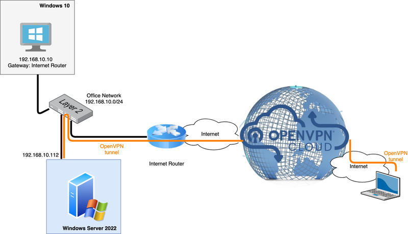

Connecting to a Windows Server 2022 network
Overview
This is a how-to guide to show the steps involved in networking a Windows-based office network to CloudConnexa. The diagram below illustrates an office LAN with an assigned subnet of 192.168.10.0/24 connecting Windows computers together. These computers get access to the Internet via a router. The Windows Server has two ethernet interfaces: one for access to the LAN subnet and another for access to the Internet via the router.
The Windows Server will be used to route traffic to CloudConnexa. In order to connect this office network to CloudConnexa, Windows Server needs to create a tunnel (which results in creating a new virtual interface) to one of the CloudConnexa Regions and then route packets between the three interfaces: office LAN, Internet, and CloudConnexa. For the Server to establish a tunnel to the VPN Region, Connector software needs to be installed on it. For the Server to route between all three LAN interfaces, routing needs to be enabled on it.
The key steps that need to be undertaken are:
Configure a Network with the office network subnet of 192.168.10.0/24 to CloudConnexa using the Administration portal. This enables routing from the VPN to that subnet and creates a Connector for the office network.
Install the Connector on Windows Server and connect to CloudConnexa.
Add Remote Access Role and Features to Windows Server.
Configure LAN routing on Windows Server.
Take the needed actions to ensure proper routing. See, Connecting Networks to CloudConnexa Using Connectors.

Implementation
Add the office subnet as a Network using CloudConnexa Administration portal Windows 2022
In order to make the office network reachable from CloudConnexa, follow these steps:
Navigate to Networks and click on the Create Network button in the upper left-hand corner to add a new Network.
Give the Network and Connector a name, add the office subnet (in this example,
192.168.10.0/24) as the subnet for the Network, select a VPN Region for the Connector that is geographically closest to the office location, and click on the Create button to complete configuration.Click on the Deploy button next to the Connector to show the various download options.
Click on the Deploy Connector option.
Select the Windows option in the Connector Type drop-down menu.
Click on the Download button in order to download an archive with the Connector software inside.
Add the office subnet as a Network using OpenVPN Cloud Administration portal Windows 2022
Navigate to Networks and click on the Create Network button on the upper left-hand corner to add a new Network.
Give the Network and Connector a name, add the office subnet (in this example,
192.168.10.0/24) as the subnet for the Network, select a WPC Region for the Connector that is geographically closest to the office location, and click on the Create button to complete configuration.Click on the Deploy button next to the Connector to show the various download options.
Click on Deploy Connector option.
Select the Windows option in the Connector Type drop down menu.
Click on the Download button in order to to download an archive with the Connector software inside.
Install the Connector on Windows Server 2022
Transfer the archive with Connector software to the Windows Server computer and extract its files.
Execute the
.msiinstaller extracted from an archive earlier.Click on the Next button to start the OpenVPN Connect Setup Wizard.
Accept the terms in the License Agreement by clicking on the checkbox and click on the Next button.
Click on the Install button to begin the installation.
Installation progress will be shown, click on the Finish button to exit the Setup Wizard.
OpenVPN Connect application will automatically start, you will also see the OpenVPN Connect icon in the system tray.
Connect to the Region by clicking on the Profile that is already imported after passing the Onboarding Tour and review and agree to the data collection and use policy.
Add the Remote Access Role and Features to Windows Server 2022
On the Windows Server computer, open Server Manager, click Manage and select Add Roles and Features.
When the Add Roles and Features Wizard opens click on the Next button.
Select Role-based or Feature-based for the type of installation and click on the Next button
Select the server to install the role. Then click on the Next button.
On the Server roles screen, check the box beside Remote Access. Then click on the Next button.
When the Features screen opens click on the Next button.
Then read the information about the Remote Access role and click on the Next button
On the Role Services screen, check the box beside Routing which will start the Add Roles and Features Wizard, just click on the Add Features button.
Note
The Direct Access and VPN (RAS) role service is also checked along with the Routing role service The two role services are installed together. Click on the Next button.
On the Web Server Role (IIS) screen, click on the Next button.
On the Role Services screen, click on the Next button.
Next, Confirmation screen, click on the Install button.
When the Remote Access role installation is completed, click on the Close button.
Add the Remote Access Role and Features to Windows Server 2022
On the Windows Server computer, open Server Manager, click Manage and select Add Roles and Features.
When the Add Roles and Features Wizard opens click on the Next button.
Select Role-based or Feature-based for the type of installation and click on the Next button
Select the server to install the role. Then click on the Next button.
On the Server roles screen, check the box beside Remote Access. Then click on the Next button.
When the Features screen opens click on the Next button.
Then read the information about the Remote Access role and click on the Next button
On the Role Services screen, check the box beside Routing which will start the Add Roles and Features Wizard, just click on the Add Features button.
Note
The Direct Access and VPN (RAS) role service is also checked along with the Routing role service The two role services are installed together. Click on the Next button.
On the Web Server Role (IIS) screen, click on the Next button.
On the Role Services screen, click on the Next button.
Next, Confirmation screen, click on the Install button.
When the Remote Access role installation is completed, click on the Close button.
Configure LAN routing on Windows Server 2022
From Server Manager, click Tools, and select Routing and Remote Access.
From the Routing and Remote Access window, right-click the server, and select Configure and Enable Routing and Remote Access.
On the first page of the setup wizard, click on the Next button
Select Custom configuration and click on the Next button.
Select LAN routing and click on the Next button.
On the summary page, click on the Finish button.
Finally, to start the service, click on the Start service button and wait for the service to start. The dot on the server will turn the color green from the color red.
Now, expand the server and expand IPv4 entry to click on the General node. The computer is now acting as a router between the interfaces shown.
Note
You must take the necessary actions to ensure proper routing. For further information, refer to: Connecting Networks to CloudConnexa Using Connectors.